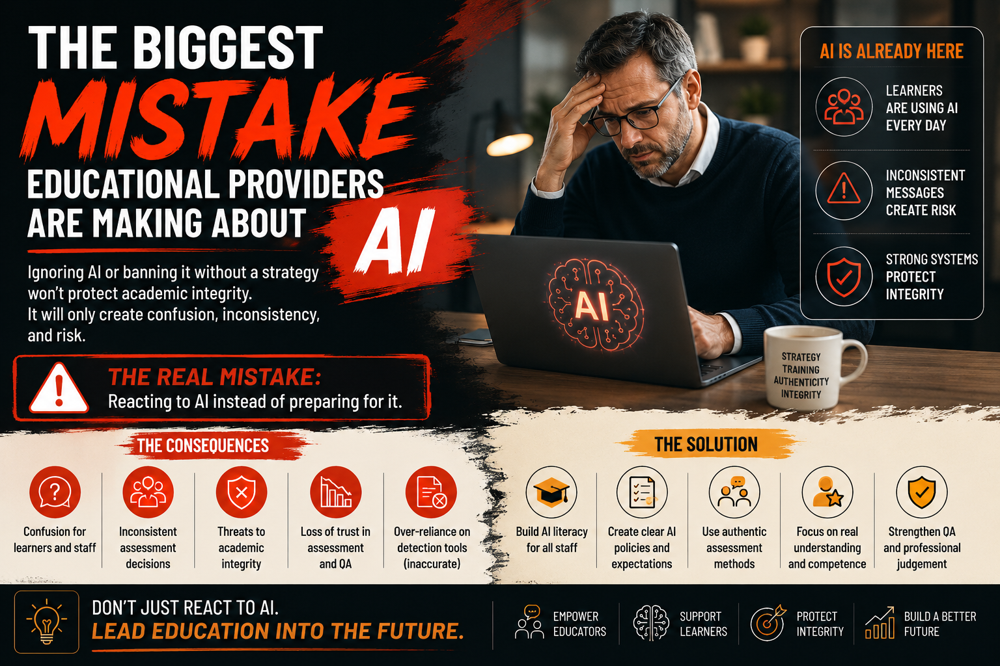

Ignoring AI or attempting to ban it without a clear strategy will not protect educational integrity. It will only create inconsistency, confusion, and risk across modern education.

Artificial Intelligence is rapidly becoming part of everyday education. Across schools, colleges, universities, and vocational training environments, learners are increasingly using AI-powered tools such as ChatGPT, Microsoft Copilot, and Gemini to support research, generate ideas, improve written work, and assist with learning activities.
At the same time, educators are exploring how AI can support lesson planning, learner engagement, accessibility, assessment preparation, and administrative efficiency.
Many educational organisations are currently making one major mistake: they are either attempting to ignore AI completely or trying to ban it without developing realistic strategies for responsible use.
This approach is becoming increasingly unrealistic because AI technologies are now widely accessible, easy to use, and rapidly improving.
One assessor may allow learners to use AI for grammar support and research assistance, while another may treat any AI involvement as academic misconduct. Without clear organisational guidance, learners receive mixed messages regarding what is acceptable and what is not.
This inconsistency can quickly undermine confidence in assessment and quality assurance processes.
Many educational providers are becoming overly reliant on AI detection software despite growing concerns regarding accuracy and false positives. Genuine learner work can sometimes be incorrectly flagged as AI-generated, while heavily edited AI-assisted content may go undetected altogether.
Instead of relying solely on AI detection systems, providers should focus on strengthening authentic assessment practices.
Another major mistake is failing to invest in AI literacy for staff. Many educators, assessors, and IQAs are now expected to manage AI-related challenges without receiving sufficient training or guidance.
Educational providers should prioritise:
AI itself should not automatically be viewed as a threat. In many situations, it can improve accessibility, inclusion, learner support, and operational efficiency when implemented responsibly.
The most effective approach lies in balanced integration supported by:
Artificial Intelligence is already changing education. The question is no longer whether educational providers should respond to AI, but whether they are prepared to adapt responsibly while still protecting authenticity, fairness, competence, and educational integrity.
The biggest mistake educational providers can make is reacting to AI emotionally instead of preparing for it strategically.